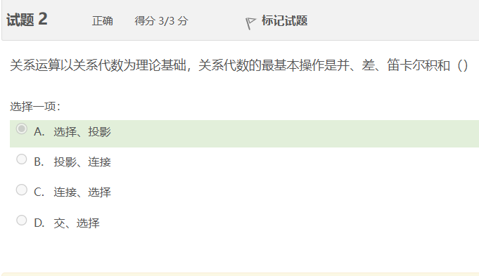
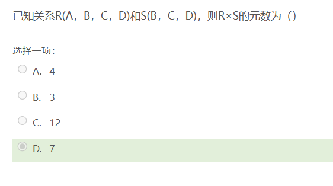
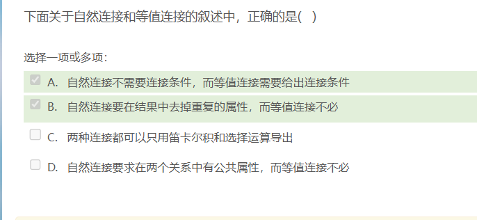
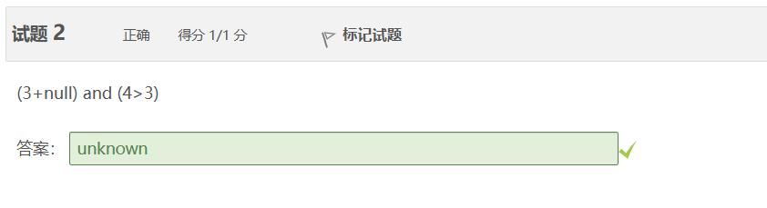
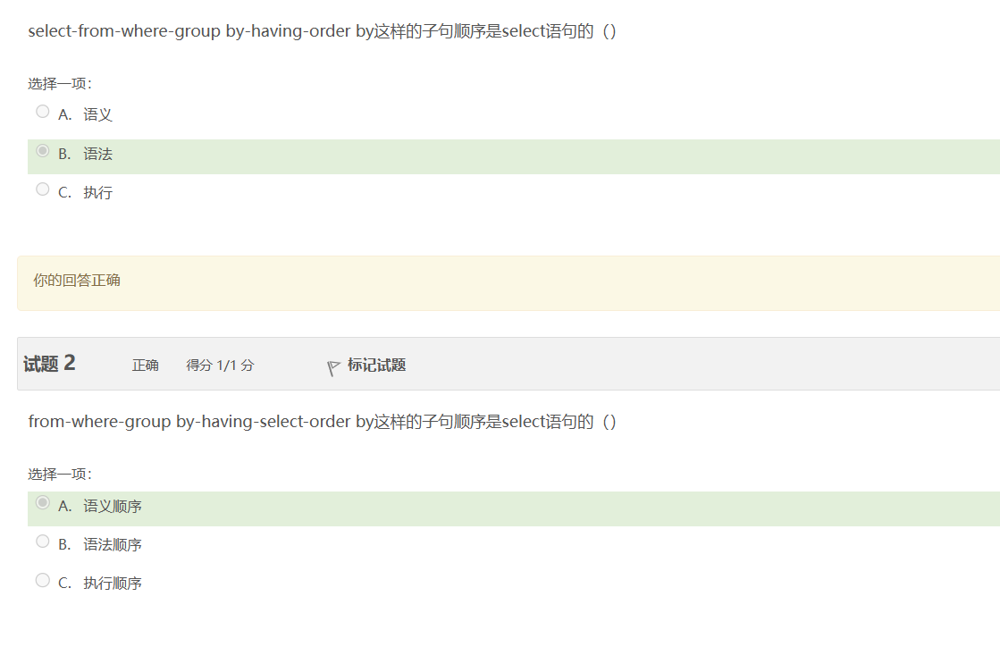
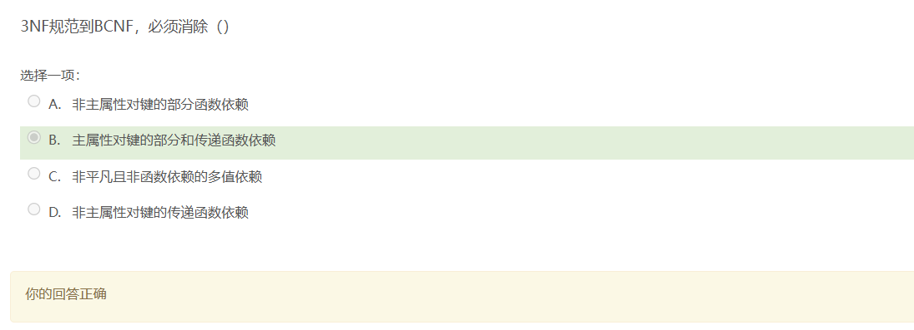
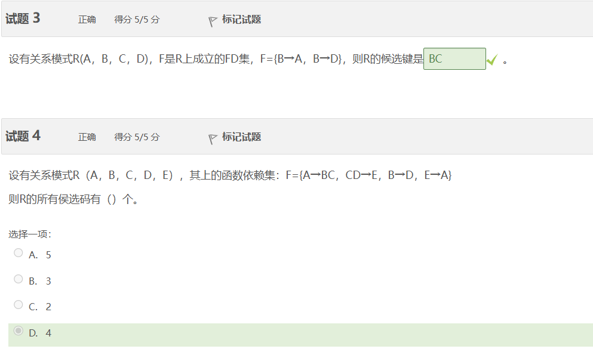
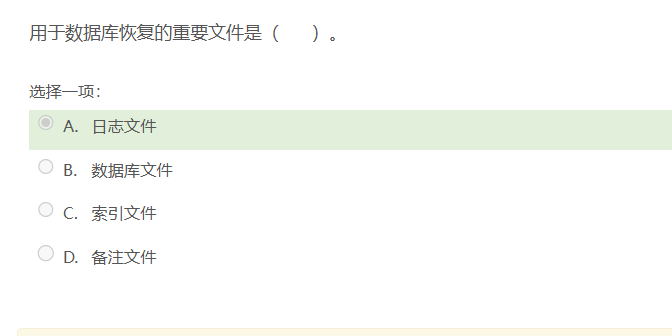
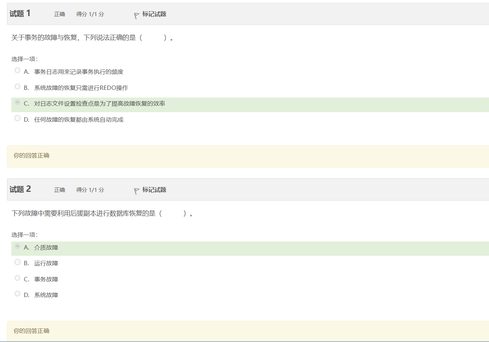

关系代数的最基本操作中，除了并、差、笛卡尔积之外，还包括 选择 和 投影。这些操作是关系代数的基础，用于从关系中提取信息、组合关系或创建新的关系。因此，正确答案是：
A. 选择、投影

关系R(A，B，C，D)有4个属性，而关系S(B，C，D)有3个属性。当计算两个关系的笛卡尔积R×S时，结果关系中的每一行都会包含R的所有属性和S的所有属性，且来自R的属性与来自S的属性互不重叠（尽管它们可能有相同的属性名，但这不影响元数的计算）。
因此，R×S的元数（即属性的数量）是R的元数加上S的元数，因为没有共同的属性需要减去。
所以，R×S的元数 = 4（R的属性数量）+ 3（S的属性数量）= 7。
正确答案是 D. 7。


在SQL中，表达式(3+null) and (4>3)的求值需要根据SQL的三值逻辑来理解。
3+null的结果是null，因为在SQL中，任何数值与null进行算术运算的结果都是null。(4>3)是一个布尔表达式，它的结果是true，因为4确实大于3。- 在SQL的三值逻辑中，
true和null进行AND操作时，结果是null，而不是false。这是因为null表示未知，与任何确定的布尔值进行逻辑运算时，结果都是未知。
综上所述，表达式 (3+null) and (4>3) 的最终结果是 null。这意味着该表达式在SQL中不会被评估为 true，即使其中一部分 (4>3) 是 true。在WHERE子句中，这样的表达式不会匹配到任何行，因为 null 不被视为 true 来满足条件。

（1）求供应工程J1零件的供应商号码SNO；
SELECT DISTINCT SPJ.SNO
FROM SPJ
WHERE SPJ.JNO = 'J1';
（2）求供应工程J1零件P1的供应商号码SNO；
SELECT DISTINCT SPJ.SNO
FROM SPJ
WHERE SPJ.JNO = 'J1' AND SPJ.PNO = 'P1';
（3）求供应工程J1零件为红色的供应商号码SNO；
SELECT DISTINCT SPJ.SNO
FROM SPJ
JOIN P ON SPJ.PNO = P.PNO
WHERE SPJ.JNO = 'J1' AND P.COLOR = '红色';
（4）求没有使用天津供应商生产的红色零件的工程好JNO；
SELECT DISTINCT J.JNO
FROM J
WHERE NOT EXISTS (
SELECT 1
FROM SPJ
JOIN S ON SPJ.SNO = S.SNO
JOIN P ON SPJ.PNO = P.PNO
WHERE J.JNO = SPJ.JNO AND S.CITY = '天津' AND P.COLOR = '红色'
);
（5）求至少用了供应商S1所供应的全部零件的工程和JNO； 这个问题比较复杂，需要两层嵌套查询，首先找出S1供应的所有零件，然后查找使用了这些全部零件的工程。这里给出一个可能的解法，但请注意，实际执行可能依赖于特定数据库系统对集合操作的支持程度。
-- 先找出S1供应的所有零件
WITH S1Parts AS (
SELECT PNO
FROM SPJ
WHERE SNO = 'S1'
),
-- 找出使用了S1供应的所有零件的工程
QualifiedProjects AS (
SELECT JNO
FROM SPJ
WHERE PNO IN (SELECT PNO FROM S1Parts)
GROUP BY JNO
HAVING COUNT(DISTINCT PNO) = (SELECT COUNT(*) FROM S1Parts)
)
SELECT JNO
FROM QualifiedProjects;
这段SQL使用了CTE（公共表达式）来分步解决这个问题，先定义了S1供应的零件集合，然后通过比较每个工程使用的零件集合是否与S1的零件集合相等来找出符合条件的工程。注意，实际应用中可能需要根据具体的数据库系统调整查询策略。

1.在从E-R模型到关系模型的转化中，关系的外部键（foreign key）通常不是由联系集自带的属性直接转化而来的。外部键主要是用来表示实体之间的关联关系。在E-R模型中，联系可以是简单联系（无属性）或复杂联系（有属性）。转化时：
- 简单联系（无属性）通常转化为一个表中的外键，引用另一个表的主键，以此来表示两个实体之间的关系。
- 复杂联系（有属性）则会转化为一个独立的表，该表的外键同时引用与之关联的两个实体表的主键，而这个联系表中的属性也会转换为该表的列。
因此，外部键更多地体现了实体之间的关联，而非联系集自带的属性直接转化，尽管在复杂联系转化为关系表时，其自带的属性也会成为新表的一部分，但核心的外键设计是为了体现关联性。
2.正确答案是：
B. 概念设计
在数据库设计的过程中，E-R模型的设计属于概念设计阶段。这个阶段主要是将需求分析得到的信息抽象成概念模型，而E-R模型作为一种常用的概念数据模型，用于描述数据的静态结构、实体之间的关系以及实体的属性等。








在SQL中，创建一个死锁情景通常涉及到两个或更多的事务，它们互相等待对方释放锁的资源。下面是一个简化的例子，演示如何在两个事务中创建死锁情况。假设我们有一个简单的银行账户表bank_account，包含字段account_id和balance。
事务1 (在第一个SQL查询分析器中执行)
BEGIN TRANSACTION;
-- 事务1尝试更新账户A的余额，但需要等待事务2完成
UPDATE bank_account SET balance = balance - 100 WHERE account_id = 1;
-- 这里加入WAITFOR延迟，模拟实际应用中可能存在的处理时间
WAITFOR DELAY '00:00:05';
-- 假设接下来事务1想要更新账户B，但这会被事务2锁定
UPDATE bank_account SET balance = balance + 100 WHERE account_id = 2;
COMMIT;
事务2 (在第二个SQL查询分析器中几乎同时执行)
BEGIN TRANSACTION;
-- 事务2尝试更新账户B的余额，但需要等待事务1完成
UPDATE bank_account SET balance = balance + 100 WHERE account_id = 2;
-- 同样加入WAITFOR延迟
WAITFOR DELAY '00:00:05';
-- 假设接下来事务2想要更新账户A，但这会被事务1锁定
UPDATE bank_account SET balance = balance - 100 WHERE account_id = 1;
COMMIT;
在这个场景中，如果两个事务几乎同时启动，它们会各自锁定一个账户并等待对方释放锁。事务1锁定了账户A并等待账户B，而事务2则锁定了账户B并等待账户A，形成经典的死锁情形。在实际的数据库管理系统中，大多数都配备了死锁检测机制，当检测到死锁时，会自动选择一个事务进行回滚以打破死锁状态。
在数据库中为什么要并发操作？
在数据库中采用并发操作的原因主要包括以下几点：
-
提高系统性能与响应速度：并发允许数据库同时处理多个用户的请求，提高了系统的吞吐量。这样可以减少用户等待时间，使系统能够更快地响应用户操作，提升用户体验。
-
支持多用户访问：在现实场景中，数据库往往是多用户共享的资源。并发机制确保了多个用户能够同时访问和操作数据库，避免了单一用户独占资源的情况，提高了资源的利用率。
-
提高资源利用率：特别是在多核处理器的系统中，通过并发执行多个线程或进程，可以充分利用多个CPU核心，避免了单线程执行时CPU资源的闲置，提升了处理能力。
-
实现数据一致性：虽然并发操作可能引发数据不一致的问题，但通过有效的并发控制机制（如锁定、多版本并发控制（MVCC）、时间戳等），可以在保证并发性的同时维护数据库的一致性，防止丢失更新、脏读、不可重复读和幻读等并发控制问题的发生。
-
满足实时处理需求：在需要实时数据处理和分析的应用场景中，如在线交易系统、实时监控系统等，并发操作能够即时响应用户需求，处理大量并发事务，保证服务的连续性和可用性。
综上所述，数据库中的并发操作是现代信息系统高效运作的基础，它不仅关乎系统性能的优化，也直接关系到用户体验和服务质量。通过合理的并发控制策略，可以在保障数据准确性和一致性的前提下，充分发挥系统的处理潜能。
并发操作会带来哪几种数据库不一致问题，这些问题是如何产生的？
并发操作在数据库中可能会引发以下几种数据不一致问题：
- 丢失修改（Lost Update）：
当两个或多个事务同时读取同一条数据，并基于初始读取的值进行修改，然后提交时，最后一个提交的事务会覆盖之前事务所做的修改。这样，先前事务所做的修改就被丢失了。例如，两个用户试图同时更新同一笔订单的余额，如果没有适当的并发控制，后提交的事务可能会覆盖前一个事务的更新，导致前一个事务的修改丢失。
- 不可重复读（Non-Repeatable Read）：
在同一个事务内，如果两次或多次读取同一数据，第二次或之后的读取可能会得到与第一次不同的结果，这是因为其他事务在这两次读取之间修改并提交了数据。这违反了事务的隔离性，使得在同一个事务中无法重复获取相同的数据视图。
- 读“脏”数据（Dirty Read）：
当一个事务读取了另一个事务尚未提交的修改数据时，如果后者最终回滚，那么前者读取到的就是无效的、不一致的数据，即所谓的“脏”数据。这种情况同样破坏了事务的隔离性。
这些问题主要是由于并发控制不当，导致事务的隔离性被破坏而产生的。在数据库系统中，为了解决这些问题，通常会采用不同的并发控制技术，比如锁机制（乐观锁、悲观锁）、多版本并发控制（MVCC）、时间戳排序等，以确保在并发环境下数据的一致性和事务的正确执行。



